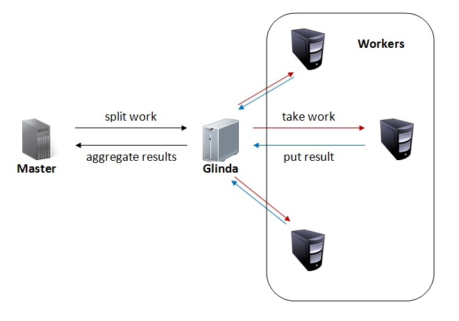
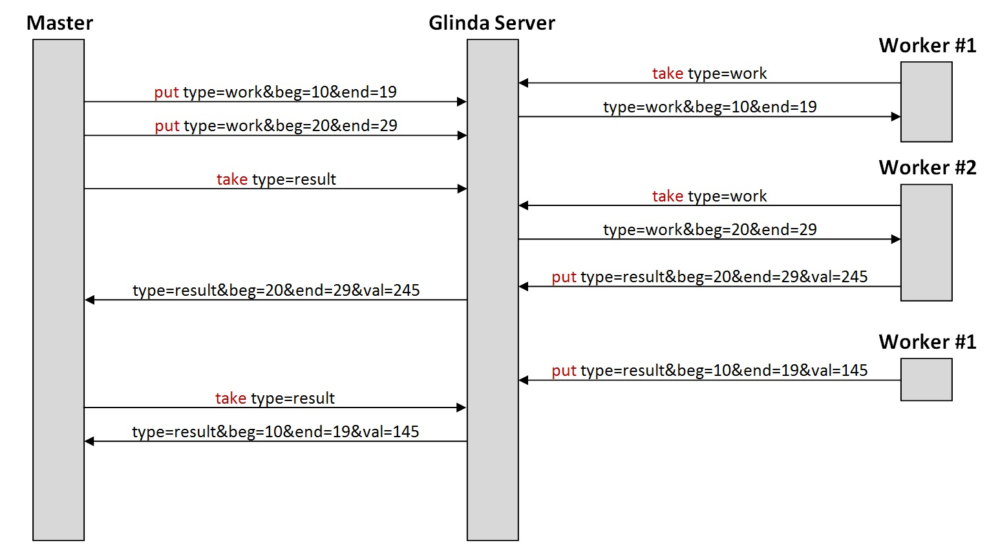

{% include chrisw/title.html %}
{% include chrisw/navbar.html %}
Glinda
Overview
Glinda is a name server that can be used for finding named resources and for sychronization between distributed processes.
Using a Glinda Server
A Glinda server is a database of attribute strings that can be accessed/modified by 4 operations:
- put key=value[&key=value]*
Stores an attribute string into the database. If more than one attribute is specified it is seperated by a '&' character.
- get *|key=value[&key=value]*
Returns the first string that matches the given key=value attribute(s). The order of attributes does not matter.
An argument of '*' matches any string: it may be used by itself to return any string or in the form key=* which returns any string with that key.
If no strings match the given query, the server responds with an "ok" status followed by no attribute string.
- list *|key=value
This operation functions similar to get, however, all strings that match the query string are returned.
If more than one string is returned, each string is seperated by a semicolon: name=chris;name=chris&age=22.
- take *|key=value[&key=value]*
This operation is nearly identical to get, except this operation causes the returned string to be deleted from the database.
Also, if no string matches the given attributes, the server will not respond causing the client to block waiting for a response.
The Glinda server mantains a list of blocked clients and their query strings. Everytime a string is put, the Glinda server will check to see
if a client can be unblocked and respond to that client.
Using Glinda to Coordinate a Compute Farm
Building a compute farm with Glinda requires two components:
- Master: Chops the workload into manageable chunks for worker nodes and then aggregates the results of the workers.
- Worker: Any number of worker nodes to perform computations.

Distributed Summation
An example of a program that uses Glinda to coordinate a compute farm is a distributed summation.
This distributed summation is executed by a master program, which takes as input a domain of numbers to add together.
The master program then splits the numbers into ranges of 10 and
puts the work on the Glinda server in the form:
type=work&beg=
n&end=
n+9.
Any number of worker nodes will then be able to execute a
take command and
pull the work off of the Glinda server. After performing the summation on the range, it will return the string with an appended
val=n attribute. The master program will finish as soon as it has taken all of the results off of the Glinda server
and added them together to calculate the final total.
Download Source
Below is a possible time lapse when running 2 worker nodes and giving the master program a summation of 10-29.
It provides the output: "summation of integers 10 to 29 = 390".
